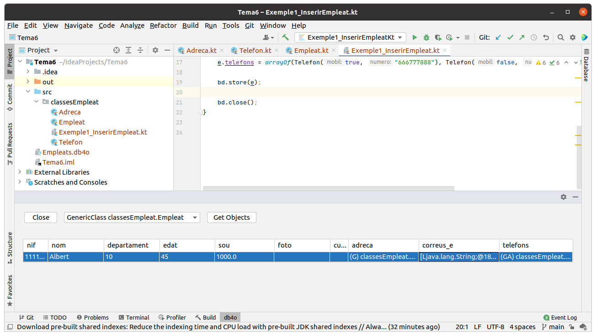
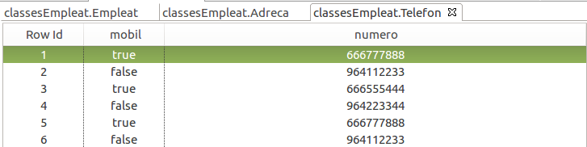

1 - Bases de Dades Orientades a Objectes
L'última alternativa que veurem per a guardar els objectes de Java serà fer servir directament una Base de Dades Orientada a Objectes. En principi semblaria que es tracta de la millor solució ja que no hi ha cap tipus de desfasament, i es podran guardar directament els objectes. Encara així, aquesta modalitat de bases de dades presenta certes peculiaritats que cal tenir molt en compte.
Actualment trobem al mercat dos tipus de Bases de Dades Orientades a Objecte.
- Les que compleixen l’estàndard proposat per l’ODMG (Object Database Management Group) a finals de l’any 2000
- Les anomenades bases de dades de tipus NoSQL , iniciatives tecnològiques posteriors. En realitat el terme NoSQL(Not Only SQL) es refereix a totes aquelles que no segueixen el Model Relacional, i s'inclourien BD Orientades a Objectes, BD XML, i també altres tipus com les documentals, les BD clau-valor, i algun altre tipus.
L’ODMG es va desfer l’any 2001, després de culminar l’estàndard anomenat ODMG 3.0. Encara que ja ha passat molt de temps, es tracta d’un estàndard molt infrautilitzat. Els llenguatges que especifica (ODL i OQL), encara que tenen una potència molt gran i permeten una adaptació real a la sintaxi habitualment utilitzada per la majoria de llenguatges Orientats a Objectes, presenta una enorme influència del paradigma relacional. Aquesta és segurament la causa de que hi hagen pocs productes actuals que seguisquen aquest model. I és una pena, perquè a banda de guardar còmodament els objectes, el OQL ens permetria buscar la informació de forma fàcil i potent.
En els últims anys han aparegut algunes iniciatives noves que proposen un canvi de plantejament en la gestió dels objectes: les Bases de Dades NoSQL. Es tracta d’un plantejament trencador que vol aprofitar-se de l’estructura interna pròpia dels objectes per organitzar la persistència a mode de punters o referències internes, de manera que una vegada guardats els objectes, no es perda la potencialitat que suposa aquesta organització.
És una iniciativa molt jove que sembla cridada a ser la següent generació en els Sistemes Gestors de Bases de Dades perquè dóna una resposta molt adequada a l’hora de representar escenaris complexos en els quals les bases de dades clàssiques (relacionals) han fracassat. Ens referim a escenaris amb components gràfics o documentals, o a situacions amb informació extremadament complexa que cal analitzar (business intelligence , per exemple).
DB4O (Database for Objects) és una de les iniciatives amb llicència GPL més actives, que implementa una base de dades 100% Orientada a Objectes i basada en el concepte NoSQL. Es tracta d’una base de dades lleugera amb una versió integrada en el propi llenguatge Java (Embedded). Això fa que la seua instal·lació siga nul·la, ja que només cal incorporar a la nostra aplicació les biblioteques que podem trobar a la pàgina de l’empresa Versant , per disposar d’una base de dades operativa. I pel seu petit volum i extrema eficiència, s’utilitza també molt en aplicacions mòbils i serveis web.
Existeix també un versió distribuïda per instal·lar en un servidor, però la versió integrada serà suficient per agafar les nocions bàsiques que ens cal explicar.
L’Ús de DB4O no precisa crear cap model de dades específic per configurar l’estructura que suporte les dades en SGBDOO. De fet, utilitza la informació interna dels objectes per construir de forma dinàmica aquesta estructura. L’extracció d’aquesta informació és possible gràcies a les característiques reflexives dels llenguatges de programació als quals dóna suport (Java i C#).
DB4O no guarda els objectes basant-se en els seus valors, sinó en les seues referències en memòria. Dos objectes ubicats en llocs diferents de la memòria RAM, encara que representen el mateix, si es guarden en DB4O es tractaran com a objectes diferents, encara que hi haja una coincidència amb tots i cadascún dels seus valors. És per això que es recomana utilitzar només una única instància per cada objecte que l’aplicació necessite. Si una instància ja està guardada, caldrà recuperar-la de la Base de Dades, ja que les successives recuperacions d’un mateix objecte retornen sempre la mateixa referència en memòria. Si la instància no estiguera guardada, caldria instanciar-la una única vegada fent servir qualsevol forma d’instanciació suportada pel llenguatge (utilitzant, per exemple, una sentència new seguida del constructor).
A banda de la instanciació d’objectes i del concepte d’identitat utilitzat, DB4O afegeix un nou concepte que caldrà tenir en compte a l’hora d’implementar aplicacions que la utilitzen. Es tracta del concepte d’activació. Per tal d’evitar un temps de procés i consum de memòria excessius a l’hora de treballar amb estructures de dades molt complexes i ramificades, DB4O ofereix diverses formes de recuperar un objecte sense haver d’instanciar tots i cadascun dels seus objectes interns. DB4O ofereix la possibilitat d’indicar la profunditat a la qual es vol fer la recuperació. Per defecte, la profunditat utilitzada és 5, però podem canviar-ho a voluntat. Una vegada instanciat un objecte podem canviar la seua profunditat d’activació de forma dinàmica en qualsevol moment, de manera que disposem d’un mecanisme per accedir a tots els objectes que l’aplicació requereix en el moment que siga necessari sense haver de malgastar recursos.
1.1 - Instal·lació de DB4O
DB4O va ser desenvolupat per la companyia db4objects, Inc. En 2008 va ser adquirida per l'empresa Versant , que va continuar desenvolupant-lo com a Open Source.
En 2012, Versant va ser adquirida per la companyia Actian , que ja no ha continuat desenvolupant-lo com a Open Source, optant per un altre producte de pagament.
A pesar de l'anterior, utilitzarem DB4O, encara que siga una versió creada ja fa un temps.
Per una banda ens farà falta el driver, el controlador. El podem obtenir des de la pàgina que Actian manté per a les versions anteriors:
http://supportservices.actian.com/versant/default.html
Dins d'aquesta pàgina veurem un apartat de db4o (on diu que ja no s'actualitzarà), però igual podrem baixar-nos el packet per a Java:
https://www.dropbox.com/s/s6farl3dqez7e1r/db4o-8.0.276.16149-java.zip?dl=0
Ens descarreguem aquest zip, del qual realment l'unic que ens interessa és el següent fitxer, situat en el directori libs
db4o-8.0.249.16098-core-java5.jar
Aquest és el driver que incorporarem al nostre projecte.
Per una altra banda, buscarem un entorn dins de IntelliJ per a poder veure les dades d'una Base de Dades de DB4O. És tan senzill com anar a la àgina de plugins (File - > Settings -> Plugins ) i en la pestanya Marketplace buscar db4o
Una vegada instal·lat convé una reinicialització de IntelliJ, i trobarem una entrada en View - > Tool windows -> db4o, que farà que s'òbiga una finestra a la part de baix per a poder inspeccionar els objectes d'una Base de Dades db4o, com veurem un poc més avant

1.2 - Funcionalitat bàsica
Treballarem sobre un exemple anterior, el dels empleats, però incorporant més dades, com els telèfons, els correus electrònics, etc, per veure que podem guardar una classe un poc més complicada en la BD Orientada a Objectes.
En un projecte nou, anomenat Tema6 , anem a incorporar el driver de DB4O
db4o-8.0.249.16098-all-java5.jar
Per organitzar-lo millor creem un paquet anomenat classesEmpleat , que ens servirà per a fer tots els exemples. Ens crearem la classe Empleat , i les classes Adreca i Telefon que utilitzarà aquella. Construïm les classes de la manera més còmoda. Això sí, a Empleat li afegirem dos constructors per a fer més còmoda la introducció d'Empleats amb poques dades, ja veurem per què.
class Adreca (var carrer: String?, var codipostal: String?, var poblacio: String?)
class Telefon( var mobil : Boolean , var numero: String)
Ara ja va Empleat :
class Empleat (
var nif: String? , var nom: String? , var departament: Int? , var edat: Int? = 0 , var sou: Double? = 0.0 ,
var foto: Array<Byte>? ,
var curriculum: Array<Char>? ,
var adreca: Adreca? ,
var correus_e: Array<String>? ,
var telefons : Array<Telefon>?
) {
constructor() : this(null,null,null,null,null,null,null,null,null,null)
constructor(nif: String) : this(nif,null,null,null,null,null,null,null,null,null)
}
Com comentàvem anteriorment, hi ha una versió servidor, però que nosaltres ens conformarem amb la versió integrada (embedded). En el cas de la versió servidor utilitzaríem la classe Db4o per a fer la connexió. Com que nosaltres farem servir la versió integrada, utilitzarem la classe Db4oEmbedded.
Connexió
És tan senzill com cridar des de la classe Db4oEmbedded el mètode estàtic openFile() passant-li com a paràmetre el nom del fitxer. A partir d’aquest moment, es mantindrà oberta una transacció que continuarà activa fins que tanquem amb el mètode close().
val bd = Db4oEmbedded.openFile("Empleats.db4o")
Inserció
Per a guardar un objecte utilitzem el mètode store(objecte)
Provem a introduir un empleat. Guardeu el següent programa en Exemple1_InserirEmpleat.kt. Guardeu-lo en el paquet exemples
import com.db4o.Db4oEmbedded
import classesEmpleat.Empleat
import classesEmpleat.Adreca
import classesEmpleat.Telefon
fun main() {
val bd = Db4oEmbedded.openFile("Empleats.db4o")
var e = Empleat("11111111a","Albert",10,45,1000.0,null,null,null,null,null)
// les dades més complicades les introduïm de forma especial
e.adreca = Adreca("C/ Major, 7", "12001", "Castelló")
e.correus_e = arrayOf("alu11111111a@ieselcaminas.org")
e.telefons = arrayOf(Telefon(true, "666777888"), Telefon(false, "964112233"))
bd.store(e);
bd.close();
}
Sí que ha guardat l'objecte. Mirem-lo des de la finestra de DB4O:

On hem obert la BD apretant el botó Open (de vegades no mostra les dades dient que This view is not available until indexes are built. Ho podem solucionar reiniciant IntelliJ i així obligant a reconstruir els índex). I hem apretat el botó Get Objects tenint seleccionada la classe Empleats.
En finalitzar d'observar les dades des de la finestra DB4O és convenient tancar la connexió. Si no la tanquem, quan anem a executar qualsevol programa que accedisca, ens donarà error, avisant que la Base de Dades està bloquejada (com.db4o.ext.DatabaseFileLockedException).
Per tant, haurem de tenir especial atenció a tancar la connexió a la Base de Dades. Podria passar que ens donara un error el programa, i la connexió s'haja quedat oberta. Segurament el més oportú serà intentar tancar el programa, o tancar IntelliJ, i d'aquesta manera desbloquejarem la Base de Dades.
El mètode commit obliga a guardar les dades cap al contenidor i activa de nou una transacció per a les properes operacions, per tant és convenient anar utilitzant-lo després d'una sèrie d'actualitzacions.
Anem a posar algunes dades més, per a tenir un poc més de joc. Concretament seran dues empleades més. Copieu el següent codi al fitxer Exemple1_1_InserirMesEmpleats.kt
import classesEmpleat.Adreca
import classesEmpleat.Empleat
import classesEmpleat.Telefon
import com.db4o.Db4oEmbedded
fun main() {
val bd = Db4oEmbedded.openFile ("Empleats.db4o")
val e = Empleat("22222222b", "Berta", 10, 35, 1700.0, null, null, null, null, null)
val f = Empleat("33333333c", "Clàudia", 20, 37, 1500.0, null, null, null, null, null)
//les dades més complicades les introduïm de forma especial
e.adreca = Adreca ("C/ Enmig, 7", "12001", "Castelló")
val corr = arrayOf( "alu22222222b@ieselcaminas.org", "berta@gmail.com" )
e.correus_e = corr
val tels = arrayOf(Telefon(true,"666555444"), Telefon(false,"964223344"))
e.telefons = tels
f.adreca = Adreca ("C/ de Dalt, 7", null, "Borriana")
val corr2 = arrayOf("alu33333333c@ieselcaminas.org")
f.correus_e = corr2
bd.store(e)
bd.store(f)
bd.close()
}
Consulta bàsica
En la següent pregunta, veurem les maneres de fer una consulta, però ara anem a veure la forma més senzilla, que és la realitzada a través del mètode anomenat queryByExample. Aquest mètode rep per paràmetre un objecte del tipus a cercar, que farà d’exemple o patró per trobar totes aquelles instàncies emmagatzemades coincidents amb les dades del patró. El patró que es passe per paràmetre no haurà de tenir totes les dades complimentades, sinó només aquelles de les quals se’n desitge la coincidència. Així, per exemple, si passem un objecte d'Empleat amb un únic atribut introduït (el nif), queryByExample retornarà totes aquelles instàncies que tinguen per nif el valor entrat. Per aquesta raó volíem un constructor amb només el nif, per a poder buscar l'empleat amb aquest nif amb queryByExample(). El retorn es fa en un objecte de tipus ObjectSet , una classe que implementa la interfície List de Java i també la interfície Iterable , de manera que siga possible recórrer el contingut utilitzant els mètodes next i hasNext. També podem utilitzar el bucle for (el del foreach).
En el següent exemple es veu com una vegada obtingut l'objecte, es pot accedir molt fàcilment a tota la informació. Copieu-lo al fitxer Kotlin Exemple2_ConsultaUnEmpleat.kt
import com.db4o.Db4oEmbedded
import com.db4o.ObjectSet
import classesEmpleat.Empleat
fun main() {
val bd = Db4oEmbedded.openFile("Empleats.db4o")
val patro = Empleat("11111111a")
val llista = bd.queryByExample<Empleat>(patro)
if (llista.hasNext()) {
val e = llista.next() as Empleat
println(
"Nif: " + e.nif + ". Nom: " + e.nom + ". Població: " + e.adreca?.poblacio
)
if (e.correus_e != null)
print("Primer correu: " + e.correus_e?.get(0) + ".")
if (e.telefons != null)
print("Primer telèfon: " + e.telefons!![0].numero + ".")
println()
}
bd.close();
}
Observeu com no hem utilitzat un bucle per a recórrer la llista, sinó un if. Això és perquè en aquest cas concret sabem a priori que en cas de trobar alguna instància, només serà una. Aquest seria el resultat:
Nif: 11111111a. Nom: Albert. Població: Castelló
Primer correu: alu11111111a@ieselcaminas.org. Primer telèfon: 666777888.
Esborrat
Per a poder fer una actualització o esborrat d'algun objecte de la Base de Dades, aquest s'ha de correspondre amb algun objecte del programa Java o Kotlin, és a dir, l'objecte ha de ser persistent. Aquesta correspondència pot ser perquè un objecte nou l'hem guardat amb store() (i continua "viu"), o perquè l'hem llegit de la BD (millor dit, hem llegit una llista i després hem fet l'assignació a un objecte).
L’eliminació dels objectes s’aconsegueix amb el mètode delete. Per defecte, DB4O elimina només l'objecte que es passa com a paràmetre, però no els objectes que aquest puga contenir. Si un objecte conté un altre objecte, com succeeix amb les instàncies Empleat i Adreca i Telefon , això pot convertir-se en un gran problema, ja que són objectes que normalment no es manipularan per separat i, en cas que no s’esborren amb el seu propietari, continuaran indefinidament en la Base de Dades. Per evitar-lo hauríem de configurar per a que esborre en cascada.
Mirem un exemple en el qual esborrem un empleat. En el comentari teniu el moment en que encara no es corresponen, i per tant no es pot esborrar. Recordeu que després d'aquest exemple, quedarà inconsistent la informació. Si no voleu fer-lo, poder saltar-vos-el. De tota manera, si el feu i queda inconsistent la informació sempre podem esborrar la Base de Dades i tornar a executar Exemple1_InserirEmpleat.kt i Exemple1_1_InserirMesEmpleats.kt. Si teniu ganes de fer-lo, guardeu-lo en el fitxer Exemple3_EsborratDefectuos.kt
import com.db4o.Db4oEmbedded
import com.db4o.ObjectContainer
import com.db4o.ObjectSet
import classesEmpleat.Empleat
fun main() {
val bd = Db4oEmbedded.openFile ("Empleats.db4o")
val patro = Empleat("22222222b")
// Si posàrem ací db.delete(patro) no tindría efecte, perquè e no es
// correspon amb cap instància de la BD
val llista = bd.queryByExample<Empleat>(patro)
if (llista.hasNext()) {
val e = llista.next()
bd.delete(e)
}
bd.close()
}
Com que no hem esborrat en cascada , si després mirem des de la perspectiva OME, comprovarem que encara existeixen els objectes adreça i telèfon, i que ara no correspondran a cap empleat. Hauríem d'aprofitar el moment per a esborrar des de la perspectiva OME les instàncies de Adreca i Telefon que corresponien a l'empleat que hem esborrat, per deixar-lo consistent. En les següents imatges es mostra aquest fet:

Ja no existeix l'objete Empleat corresponent a Berta, però:
 |
|
|---|---|
encara existeix la seua adreça (C/Enmig, 7 de Castelló) i els seua telèfons (666555444 i 964223344)
Per a poder esborrar en cascada , en el moment d’obrir el fitxer contenidor haurem d'especificar-lo posant-li una configuració com veurem a continuació. No és possible modificar la configuració de forma dinàmica. A més, malauradament, la configuració no es guarda amb el fitxer contenidor, sinó que cada vegada que obrim, haurem d'especificar-li la configuració desitjada. En aquesta configuració li direm que la classe Empleat esborra en cascada, és a dir, que quan esborrem un objecte, els objectes "subordinats" (de les classes Adreca i Telefon) també s'esborraran. Copieu el segúent codi en un fitxer anomenat Exemple4_EsborratCorrecte.kt :
import com.db4o.Db4oEmbedded
import com.db4o.ObjectContainer
import com.db4o.ObjectSet
import classesEmpleat.Empleat
fun main() {
val conf = Db4oEmbedded.newConfiguration()
conf.common().objectClass("classesEmpleat.Empleat").cascadeOnDelete(true)
val bd = Db4oEmbedded.openFile(conf,"Empleats.db4o")
val patro = Empleat("33333333c")
// Si posàrem ací db.delete(patro) no tindría efecte, perquè e no es
// correspon amb cap instància de la BD
val llista = bd.queryByExample<Empleat>(patro)
if (llista.hasNext()) {
val e = llista.next()
bd.delete(e)
}
bd.close()
}
En les següents imatges es mostra com ara sí que ha esborrat en cascada:

Hem esborrat a Clàudia
 |
|
|---|---|
I també ha desaparegut la seua adreça (C/ de Dalt de Borriana). Com que no tenia telèfons, continuen els mateixos d'abans
Modificació
Per a modificar un objecte de la Base de Dades primer haurem de tenir un objecte de Java que es corresponga amb ell (igual que en l'esborrat). Després de modificar-lo, només l'haurem de guardar amb store(). Hem de parar atenció a que si el que volem modificar és d'una subclasse, haurem de modificar en cascada , sinó no tindrà efecte. Ho farem indicant cascadeOnUpdate(true) a la configuració amb què obrirem el fitxer. Copieu el següent codi en un fitxer Kotlin anomenat Exemple5_ModificarCascada.kt :
import com.db4o.Db4oEmbedded
import com.db4o.ObjectContainer
import com.db4o.ObjectSet
import com.db4o.config.EmbeddedConfiguration
import classesEmpleat.Adreca
import classesEmpleat.Empleat
fun main() {
val conf = Db4oEmbedded.newConfiguration()
conf.common().objectClass("classesEmpleat.Empleat").cascadeOnUpdate(true)
val bd = Db4oEmbedded.openFile(conf, "Empleats.db4o")
val patro = Empleat("11111111a")
val llista = bd.queryByExample<Empleat>(patro)
if (llista.hasNext()) {
var e = llista.next()
if (e.sou != null) {
e.sou = e.sou.toString().toDouble() + 200.0
}
val adr = e.adreca
adr?.carrer = "Pl. Rei en Jaume, 15"
adr?.codipostal = "12002"
e.adreca = adr
bd.store(e)
}
bd.close()
}
En la imatge es veu que en fer l'actualització en cascada sí que s'han guardat els canvis, i la primera adreça (que és la corresponent a Albert) s'ha modificat.

La restricció que hem comentat abans de que hem de tenir un objecte de Java que es corresponga amb ell (que ocupa els casos d'esborrat i modificació), l'hem de tenir molt present. I hem d'anar amb compte, perquè quan es tanca la BD es perd tota correspondència.
El següent exemple és idèntic a l'anterior, però es tanca i es torna a obrir la BD després d'haver assignat a e l'objecte, i abans de guardar-lo; per tant L'OBJECTE ESTÀ SEPARAT (ja no està associat a un objecte de la Base de Dades). En principi el que voldríem és modificar les dades de l'empleat existent, però en realitat hem introduït un nou empleat (amb el mateix nif, nom, ...), i per tant molt perillós perquè estem duplicant la informació. Observeu que, com que només es vol modificar el sou, no cal actualitzar en cascada. Si voleu provar l'exemple, gaurdeu el següent codi en el fitxer Kotlin Exemple6_ModificacióIncorrecta.kt. I recordeu que la Base de Dades haurà quedat malament, i per tant el millor seia esborrar-la i tornar a executar els exemples Exemple1_InserirEmpleat.kt i Exemple1_1_InserirMesEmpleats.kt
import com.db4o.Db4oEmbedded
import com.db4o.ObjectContainer
import com.db4o.ObjectSet
import classesEmpleat.Empleat
fun main() {
var bd = Db4oEmbedded.openFile ("Empleats.db4o")
val patro = Empleat("11111111a")
val llista = bd.queryByExample<Empleat>(patro)
if (llista.hasNext()) {
var e = llista.next()
if (e.sou != null) {
e.sou = e.sou.toString().toDouble() + 200.0
}
bd.close() // Tanquem i tornem a obrir la BD, per veure que hem
// perdut la correspondència de e amb l'objecte de la BD
bd = Db4oEmbedded.openFile("Empleats.db4o")
bd.store(e)
}
bd.close()
}
Ara el contingut de la Base de Dades és aquest:

On es veu que hem creat un nou objecte, en compte de modificar el que ja existia. I el mateix amb l'adreça i els telèfons
|  | |
|---|---|
En cas que tanquem la BD i vulguem modificar o esborrar un objecte haurem de tornar a connectar amb ell.
I en el cas de la inserció, abans d'inserir, podríem comprovar que no existeix (per exemple que no existeix cap empleat amb aquest nif).
1.3 - Consultes
DB4O disposa de tres formes de realitzar consultes. Totes elles són de tipus NoSQL.
Si havíeu fet tots els exemples anteriors, potser siga millor esborrar Empleats.db4o i tornar a executar Exemple1_InserirEmpleat.kt i Exemple1_1_InserirMesEmpleats.kt per a crear-les de nou.
La primera forma ja s’ha comentat, és la que s’anomena consulta basada en un exemple o “query by example ”. Consisteix, com ja hem vist, en trobar totes les instàncies guardades que coincidesquen amb els valors no nuls i diferents de zero (en cas que siguen numèrics) d’un patró o exemple passat per paràmetre.
Si, per exemple, volem traure els empleats del departament 10 que són de Castelló, n’hi hauria prou amb crear el patró que posem a continuació. Copieu el següent codi al fitxer Exemple11_Consulta_QueryByExample.kt
import com.db4o.Db4oEmbedded
import com.db4o.ObjectContainer
import com.db4o.ObjectSet
import classesEmpleat.Adreca
import classesEmpleat.Empleat
fun main() {
val bd = Db4oEmbedded. openFile("Empleats.db4o")
val patro = Empleat()
patro.departament = 10
patro.adreca = Adreca (null, null, "Castelló")
val llista = bd.queryByExample<Empleat>(patro)
for (e in llista) {
System.out.println("Nif: " + e.nif + ". Nom: " + e.nom
+ ". Departament: " + e.departament + ". Població: " + e.adreca?.poblacio
)
}
bd.close()
}
cosa que donarà com a resultat el següent, que es pot comprovar que són del departament 10 i de Castelló:
Nif: 11111111a. Nom: Albert. Departament: 10. Població: Castelló
Nif: 22222222b. Nom: Berta. Departament: 10. Població: Castelló
Seguint aquest raonament, per obtenir tots els empleats de l’aplicació caldrà passar un patró empleat sense valors (bd.queryByExample(Empleat() )), i si el que desitgem és obtenir tots els objectes emmagatzemats a la base de dades, el que haurem de passar com a paràmetre és un valor null ( bd.queryByExample(null) ).
Com podeu veure, resulta un sistema molt simple. Ara bé, també té moltes limitacions en consultes més complexes, i fins i tot poden resultar impossibles. Posem alguns exemples en els quals no funciona aquest tipus de consulta:
- És impossible trobar tots els empleats que no tinguen algun camp assignat encara (és a dir, null) a causa del mecanisme utilitzat: només s’avaluen els camps no nulls.
- Tampoc podríem trobar aquells empleats que cobren més de 1300€ . En aquest tipus de consulta només podem buscar igualtats.
- Com es basa en la coincidència, no podrem fer consultes que puguen agafar un de dos o més valors determinats. Per exemple, agafar els empleats que són de Castelló o Borriana.
Mètode Native Queries
DB4O disposa d’un sistema molt més potent anomenat Native Queries. És fàcil deduir que es tracta d’un sistema vinculat directament al mateix llenguatge de programació. De fet, es tracta de construir un procediment en el qual s'avaluen els objectes i es decideix quins objectes acompleixen la condició i quins no.
Per a fer la consulta haurem de crear una classe que implemente una interfície anomenada Predicate. Aquesta interfície consta d'un únic mètode declarat anomenat match. La classe nostra que implementarà Predicate haurà de sobreescriure el mètode match(), i en aquest mètode podrem posar una sèrie de sentències Kotlin i dir si cada objecte de la Base de Dades acompleix o no la condició tornant respectivament true o false.
En el següent exemple creem una classe anomenada EmpleatsPerPoblacio (que implementa Predicate), a la qual se li pot passar en el constructor un vector de cadenes de caràcters amb els noms de les poblacions de les quals volem els empleats. En la implementació del mètode match tornarem cert si l'empleat és d'alguna de les poblacions, i fals en cas contrari. Com que utilitzem el mateix llenguatge de programació, la potència és molt elevada. Copieu el següent codi en un fitxer anomenat Exemple12_Consula_NativeQuery_1.kt
import com.db4o.Db4oEmbedded
import com.db4o.ObjectContainer
import com.db4o.ObjectSet
import com.db4o.query.Predicate
import classesEmpleat.Empleat
class EmpleatsPerPoblacio(pobles: Array<String>) : Predicate<Empleat>() {
val poblacions = pobles
override
fun match(emp: Empleat): Boolean {
return (emp.adreca?.poblacio in poblacions)
}
}
fun main() {
val bd = Db4oEmbedded.openFile("Empleats.db4o")
val pobl = arrayOf("Castelló", "Borriana")
val llista = bd.query(EmpleatsPerPoblacio(pobl))
for (e in llista) {
println(e.nom + " (" + e.adreca?.poblacio + ")")
}
bd.close()
}
Observeu que una vegada definida la classe, podem fer-la servir en una Query per realitzar una consulta específica. En l'exemple, s'obtenen tots els empleats que són de Castelló o de Borriana. En variar la llista de poblacions obtindrem uns objectes empleat o uns altres. En el mètode match, que és qui diu si un element Empleat compleix la condició, es comprova si la població de l'empleat (que està dins d'adreça, i per tant s'accedeix amb emp.adreca?.poblacio ) està dins de l'array de poblacions.
Com que es tracta d’una interfície amb un únic mètode a implementar, no caldrà que implementem sempre noves classes per a cada consulta diferent, sinó que podem fer servir classes anidades anònimes (anonymous nested class), per a fer-lo molt més curt, definint la classe en el oment d'utilitzar-la.
Mirem-ho en un altre exemple, en el qual es buscaran els empleats que tinguen el sou entre dos valors determinats. Construïm la classe Predicate en el mateix lloc on s'utilitza, en el query() , i no abulta molt perquè només té el mètode match(). En el mètode match() és on es comprova la condició. Copieu el següent codi en el fitxer Exemple13_NativeQuery_2.kt :
import com.db4o.Db4oEmbedded
import com.db4o.ObjectContainer
import com.db4o.ObjectSet
import com.db4o.query.Predicate
import classesEmpleat.Empleat
fun main() {
val bd = Db4oEmbedded.openFile("Empleats.db4o")
val max = 1500.0
val min = 1000.0
val llista = bd.query(object: Predicate<Empleat>() {
override
fun match(emp: Empleat): Boolean {
if (emp.sou.toString().toDouble() <= max && emp.sou.toString().toDouble() >= min)
return true
else
return false
}
})
for (e in llista) {
System.out.println(e.nom + " (" + e.sou + ")")
}
bd.close()
}
En tractar-se d’una interfície amb un únic mètode a implementar, no caldrà que implementem sempre noves classes per a cada consulta diferent, sinó que podem fer servir classes imbricades anònimes (anonimous nested class). Recordeu que les classes imbricades poden treballar directament amb tots els atributs (tinguin l’àmbit que tinguin) de la classe que les contingui i que les classes anònimes es defineixen a l’interior d’un mètode qualsevol.
Mètode SODA
Existeix encara una altra forma de definir consultes. DB4O l’anomena SODA (Simple Object Database Access), i es pot considerar com la forma d’accedir a l’estructura interna de la base de dades a baix nivell per tal de seleccionar els nodes de dades que complesquen uns determinats requisits i que acabaran determinant el resultat de la consulta. De fet, segons indiquen els autors, és la forma de consulta més ràpida de les tres.
La idea fonamental de SODA és construir les consultes com un recorregut d’una xarxa de nodes enllaçats. Els nodes de la consulta s’estructuren de forma semblant a les classes emmagatzemades a la base de dades, de manera que el camí seguit en avaluar la consulta, node a node, es repeteix en les instàncies emmagatzemades, la qual cosa permet accedir als valors per avaluar de forma ràpida.
El camí s’especifica utilitzant el mètode descend() per mitjà del qual seleccionem la branca de l’estructura de classes que vulguem fer referència. Per exemple, si ens trobem en el node de la classe Empleat i volguérem fer referència al nom de la població que en l’estructura de classes es troba a empleat.adreca.poblacio , hauríem de fer
node.descend("adreca").descend("poblacio")
El resultat de la sentència anterior és un node focalitzat a l’atribut població continguda a l’adreça de l'empleat.
Cada node pot estar afectat per una restricció, per una ordenació i/o per una operació amb una altre node. Les restriccions permeten seleccionar o desestimar les instàncies que es vagen comprovant. Les ordenacions, com és natural, forcen l’ordre de les instàncies seleccionades d’acord amb els valors de l’atribut representat pel node afectat. Finalment, les operacions marquen quin serà el següent node a avaluar, el qual actuarà també com a filtre dels objectes de la selecció.
Les restriccions es veuran afectades per una o més relacions que permetran modificar la comparació i sentenciar en favor o en contra de la selecció d’una instància. Per defecte, la relació avaluada és la d’igualtat. Per exemple, si partim d’un node que representa el NIF d’un empleat, podem definir la relació d’igualtat següent:
node.constrain("11111111a")
Mirem com quedaria el programa que selecciona únicament l'empleat amb el nif anterior. Guardeu el següent codi al fitxer Exemple14_QuerySoda_1.kt
import com.db4o.Db4oEmbedded
import com.db4o.ObjectContainer
import com.db4o.ObjectSet
import com.db4o.query.Query
import classesEmpleat.Empleat
fun main() {
val bd = Db4oEmbedded.openFile("Empleats.db4o")
val q = bd.query () //node arrel.
var node = q.descend ("nif") //arribem a l'altura del nif, que és on posem la restricció
node.constrain("11111111a")
val llista = q.execute<Empleat>()
for (e in llista){
println("Nif: " + e.nif + ". Nom: " + e.nom + " (" + e.sou + ")")
}
bd.close()
}
En realitat intentarà agafar en principi tots els objectes de la Base de Dades, i recordem que tenim objectes Empleat, Adreca i Telefon. Però observeu que no cal especificar que siga únicament objectes de la classe Empleat, perquè és l'única classe que té una propietat anomenada nif, per tant únicament selccionarà empleats
Però si la relació ha de ser una comparació de tipus major que , menor o igual que , ... , caldrà especificar-les expressament. La manera serà especificant un mètode de la restricció. Les possibilitats seran:
- Major:greater()
Si suposem que partim d’un node focalitzat al sou d’un empleat i volem la condició que el sou siga major estrictament que 1300. S’indicaria d'aquesta manera:
node.constrain(1300).greater()
- Menor: smaller()
Si volem que el sou siga estrictament menor que 1500:
node.constrain(1500).smaller()
- Major o igual, menor o igual:equal() (després del greater o smaller)
Si ara volem que el sou siga menor o igual que 1500:
node.constrain(1300).smaller().equal()
- Que comence per: startsWith(boolean)
Si partim d'un node focalitzat al nom de l'empleat i volem els que comencen per A :
node.constrain("A").startsWith(true)
Si en el paràmetre booleà posem true, haurà de coincidir exactament el principi. Si posem false, no distingirà entre majúscules i minúscules.
- Per a unir restriccions: or(restriccio) and(restriccio). Per a negar not()
Per exemple, si partim d’un node focalitzat al nom de l'empleat, podem seleccionar tots els que comencen per A o per B , fent:
var constr1 = node.constrain("A").startsWith()
val constr2 = node.constrain("B").startsWith()
constr1.or(constr2)
- Si posem més d'una restricció (més d'un constrain), s'hauran de complir totes, i per tant actua com un and
A banda de les restriccions, si volem ordenar de forma ascendent o descendent, ho indicarem amb els mètode orderAscending() o orderDescending() del node pel mig del qual volem ordenar .
Mirem un parell d'exemples per veure com es posa tot en joc. Anem a construir la sentència que permeta seleccionar tots els empleats amb un sou que oscil·le entre un rang de valors definits (estrictament major que 1000, i menor o igual que 1500, per exemple) ordenats de forma descendent per sou. Guardeu-lo al fitxer Exemple15_QuerySoda_2.kt
import com.db4o.Db4oEmbedded
import com.db4o.ObjectContainer
import com.db4o.ObjectSet
import com.db4o.query.Query
import classesEmpleat.Empleat
fun main() {
val bd = Db4oEmbedded.openFile("Empleats.db4o")
val q = bd.query() //node arrel.
var node = q.descend("sou") //arribem a l'altura del sou, que és on posem la restricció
node.constrain(1000).greater().and(node.constrain(1500).smaller().equal())
node.orderDescending()
val llista = q.execute<Empleat>()
for (e in llista) {
println("Nif: " + e.nif + ". Nom: " + e.nom + " (" + e.sou + ")")
}
bd.close()
}
I ara els empleats del departament 10 que són de Castelló. Podem utilitzar el mateix objecte node per anar afegint restriccions, però haurem de cuidar de localitzar-lo al lloc oportú. Guardeu-llo amb el nom Exemple16_QuerySoda_3.kt
import com.db4o.Db4oEmbedded
import com.db4o.ObjectContainer
import com.db4o.ObjectSet
import com.db4o.query.Query
import classesEmpleat.Empleat
fun main() {
val bd = Db4oEmbedded.openFile("Empleats.db4o")
val q = bd.query() //node arrel.
var node = q.descend("departament") //arribem a l'altura del departament, que és on posem la restricció
node.constrain(10)
node = q.descend("adreca").descend("poblacio") //i ara arribem a l'altura de la població de l'adreça
node.constrain("Castelló")
val llista = q.execute<Empleat>()
for (e in llista) {
println("Nom: " + e.nom + ". Població: " + e.adreca?.poblacio + ". Departament: " + e.departament)
}
bd.close()
}
Tot i que cal ens proporciona 3 maneres de fer les consultes, i al final aquestes poden ser potents, no és capaç de tenir tota l’expressivitat d’un llenguatge com OQL. No disposa de funcions d’agregat (SUM, AVG, MAX, MIN, ...), ni es poden expressar relacions entre instàncies. És l’aplicació la que haurà de fer-se responsable que això siga possible.
Llicenciat sota la Llicència Creative Commons Reconeixement NoComercial CompartirIgual 2.5